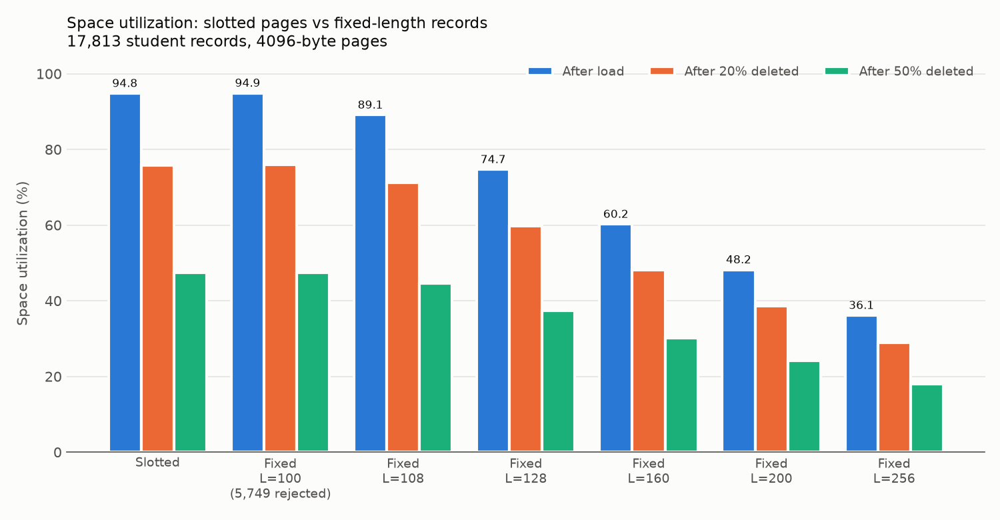
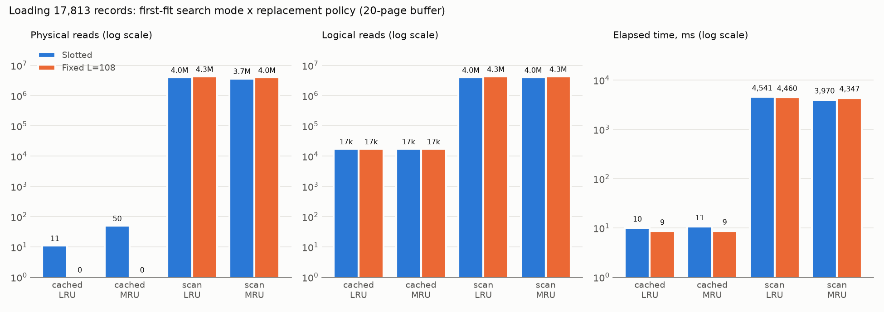

This document summarizes the completed part-2 work: a slotted-page layer for variable-length records on top of the PF layer, a separate fixed-length (static) layer used as the baseline, their tests, and the space and I/O experiments on the 17,813 student records. Part 3 (index construction on roll-no) is next.
| File (toydb/splayer/) | Purpose |
|---|---|
slotted.h/.c | Slotted-page layer: create/open/close, insert, delete, get by RID, sequential scan, space statistics |
fixedrec.h/.c | Fixed-length layer with the same operations; every record occupies exactly L bytes |
recfile.h/.c | Shared definitions only: RID packing, error codes, search modes, the space-statistics structure |
studentdata.h/.c | Reads data/student.txt into raw records (title and blank lines skipped) |
testslotted.c, testfixed.c, testload.c | C tests; run_tests.py builds and runs them all and writes a report |
spbench.c, run_experiments.py, experiments.json | Experiment driver, runner and configuration |
No PF or AM source file was modified. Both layers use only the PF interface (PF_AllocPage,
PF_GetThisPage, PF_GetNextPage, PF_MarkDirty, PF_UnfixPage,
PF_OpenFileWithPolicy).
The whole 4096-byte PF data area is used; the PF layer keeps its own page header outside it. All fields are 16-bit integers at fixed offsets - no pointers are stored on disk.
offset 0 magic 0x5350 | 2 numSlots | 4 liveCount | 6 freeEnd
offset 8 slot directory: numSlots x {offset, length} (empty slot: offset 0)
[header 8B][slot 0][slot 1]...[slot n-1] free space [rec]...[rec][rec]
^freeStart = 8 + 4n ^freeEnd ^4096
The directory grows forward and records grow backward. Because every delete compacts the page, records always
fill exactly [freeEnd, 4096); each fetched page is validated against this. Largest record: 4084 bytes.
A record id is RID = page × 65536 + slot - one non-negative int, the type
AM_InsertEntry expects (pages 0..32767, so the largest RID is exactly INT_MAX).
| Question | Options considered | Agreed decision and consequence |
|---|---|---|
| 1. Record representation | A raw text line; B fields with length prefixes | A. Each student.txt line stored unchanged; fields split on ";" when needed. Lets every record be verified byte-for-byte. |
| 2. RIDs and slot reuse | A reuse deleted slots; B never reuse slot numbers | A. RID = page × 65536 + slot. Lowest empty slot reused; trailing empty slots trimmed. Part 3 rule: delete a student's index entry before its slot can be reused, or the entry would point at a different record. |
| 3. Records longer than L (fixed layout) | A truncate; B reject; C only test L ≥ longest | C with rejection reporting. L ∈ {100, 108, 128, 160, 200, 256}; longest record is 108 bytes. Rejected records are counted per L, never truncated. |
| 4. Utilization formula | A record bytes / (pages × 4096); B exclude page overhead | A for both layouts. Every page byte is record data, metadata, padding or free; the four always sum to pages × 4096 (checked by the tests). |
| 5. Page for an insert | A last page; B first fit; C on-disk free-space map | B for the load and later inserts. Default search keeps each page's free space in memory (rebuilt on open) and fetches only the chosen page; a literal page-by-page scan is kept for comparison. Both choose identical pages. |
| 6. When to compact | A on every delete; B lazily on insert | A. Free space is always one contiguous region, so an insert only compares sizes; RIDs stay valid. |
'\0' and derives a record's length from the first pad byte, so it stores no per-slot length (purely static); records containing '\0' are rejected.-std=gnu17 -fpermissive instead of editing it. The part-1 build command needs the same flags; the root README is updated.Full options, results and evidence: outputs/design-decisions/part2-design-decisions.md and the
"Part 2 slotted pages" sheet of toydb-design-decisions.xlsx.
| Program (cases) | What it verifies |
|---|---|
testslotted (6) | RID boundaries; insert/get/error codes; max-size record; exact first-fit placements; compaction leaves one free region and other records intact; slot reuse; directory trimming; one logical read + one logical write per insert/delete; persistence after reopen; rejection of non-slotted pages; 4,000 random operations against an in-memory model with both search modes producing identical RIDs |
testfixed (6) | Slots per page for each L; oversized and '\0' rejection; slot reuse; I/O counts; padding accounting; L mismatch and slotted files refused on open; 4,000 random operations |
testload (2) | All 17,813 student records loaded into slotted and fixed (L = 100, 108, 128, 256), read back by RID and by scan, byte-for-byte; rejects exactly the records longer than L |
| part-1 PF tests (12) | Re-run after a genuine rebuild with the flags above (run_tests.py --with-pf) |
| Buffer sizes | Unit tests run with 1-, 2- and 20-frame pools in both search modes; the 1-frame runs prove no operation leaves a page fixed. Report: outputs/slotted-pages/test-results.txt |
17,813 records, 1,759,011 bytes, longest 108 bytes. 4096-byte pages, 20-page LRU pool, first-fit insertion.
| Layout | L | Stored | Rejected | Pages | Rec/page | Metadata B | Padding B | Free B | Utilization |
|---|---|---|---|---|---|---|---|---|---|
| Slotted | - | 17,813 | 0 | 453 | 39.3 | 74,876 | 0 | 21,601 | 94.80% |
| Fixed | 100 | 12,064 | 5,749 | 302 | 39.9 | 3,926 | 57,816 | 1,600 | 94.88% |
| Fixed | 108 | 17,813 | 0 | 482 | 37.0 | 6,266 | 206,727 | 2,268 | 89.10% |
| Fixed | 128 | 17,813 | 0 | 575 | 31.0 | 6,900 | 587,753 | 1,536 | 74.69% |
| Fixed | 160 | 17,813 | 0 | 713 | 25.0 | 8,556 | 1,150,961 | 1,920 | 60.23% |
| Fixed | 200 | 17,813 | 0 | 891 | 20.0 | 9,801 | 1,879,324 | 1,400 | 48.20% |
| Fixed | 256 | 17,813 | 0 | 1,188 | 15.0 | 11,880 | 3,093,365 | 1,792 | 36.15% |

Load phase, 20-page pool; every modifying phase ends with a close so all dirty pages are written inside it. Counts are identical over 3 repetitions; times are means.
| Layout | Search | Policy | Logical reads | Physical reads | Physical writes | Time (ms) |
|---|---|---|---|---|---|---|
| Slotted | cached | LRU | 17,360 | 11 | 464 | 10 |
| Slotted | scan | LRU | 4,011,349 | 4,003,039 | 17,038 | 4,568 |
| Slotted | scan | MRU | 4,011,349 | 3,677,408 | 14,704 | 4,195 |
| Fixed 108 | cached | LRU | 17,331 | 0 | 482 | 9 |
| Fixed 108 | scan | LRU | 4,296,307 | 4,288,537 | 17,093 | 4,624 |
| Fixed 108 | scan | MRU | 4,296,307 | 3,961,885 | 14,878 | 4,098 |

SP_InsertRec's RID directly as the AM recId; REC_SplitRid recovers (page, slot).SP_ScanOpen/SP_ScanNext + AM_InsertEntry; "incremental" = insert record then index entry.make -C toydb/splayer # also rebuilds PF with -std=gnu17 -fpermissive python3 toydb/splayer/run_tests.py --with-pf # 26 cases, report in outputs/slotted-pages/ python3 -m venv ~/.venvs/toydb && ~/.venvs/toydb/bin/pip install matplotlib ~/.venvs/toydb/bin/python toydb/splayer/run_experiments.py # settings: toydb/splayer/experiments.json